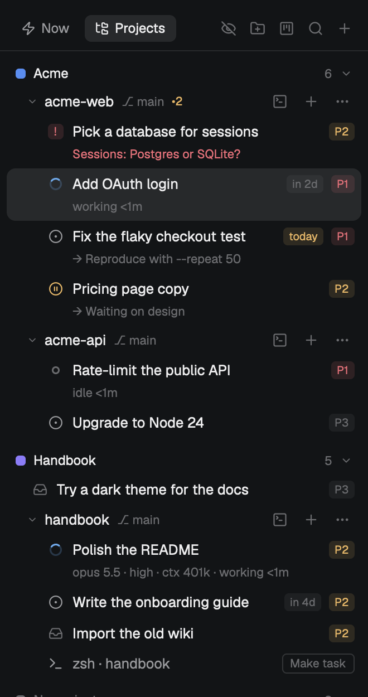
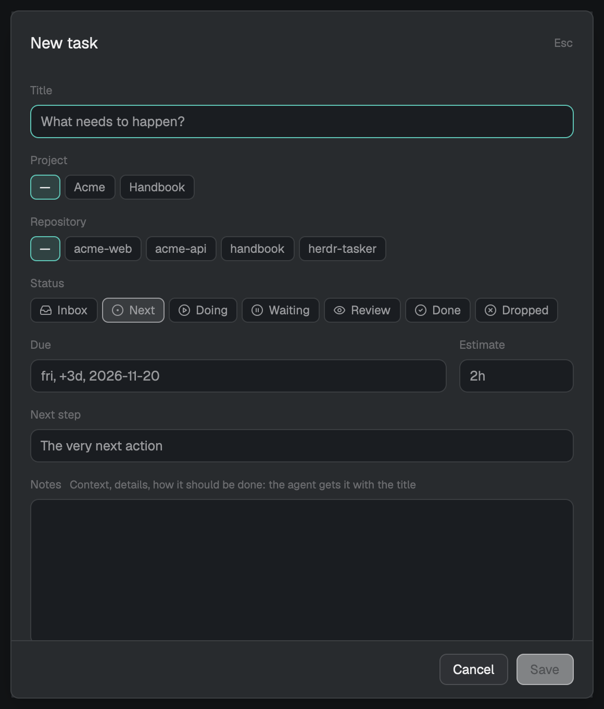
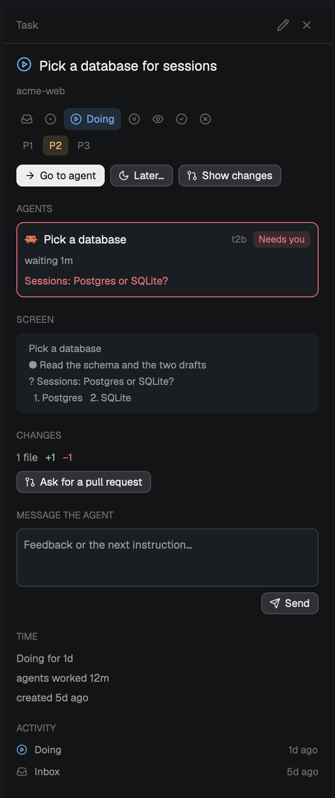
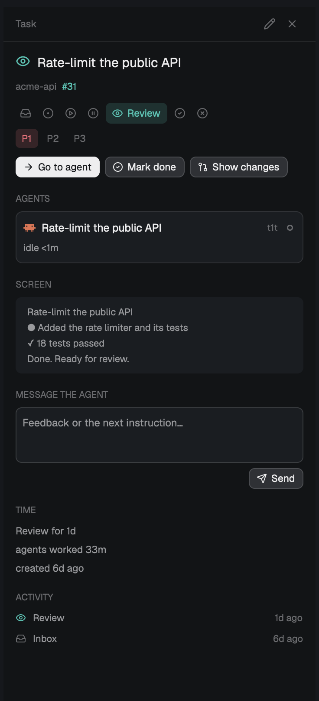
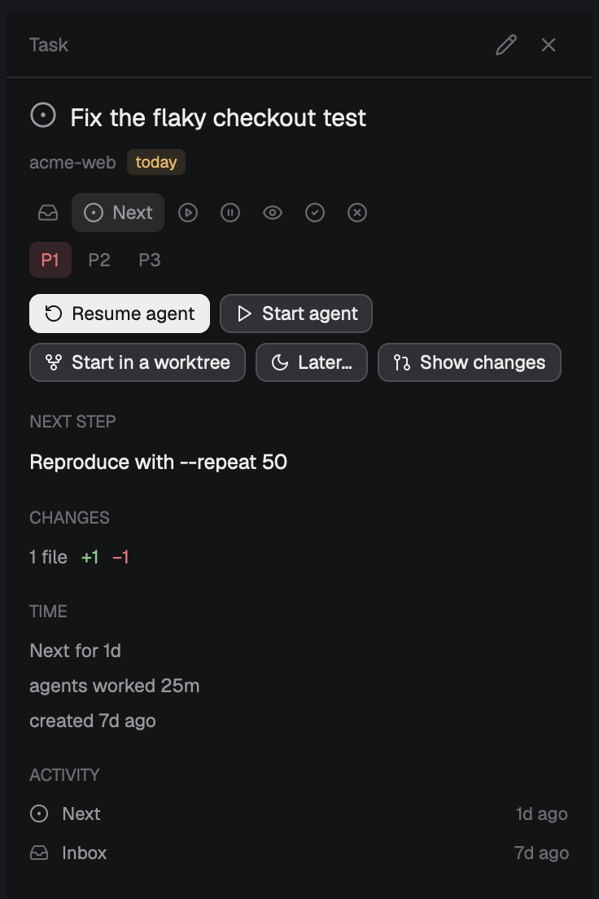
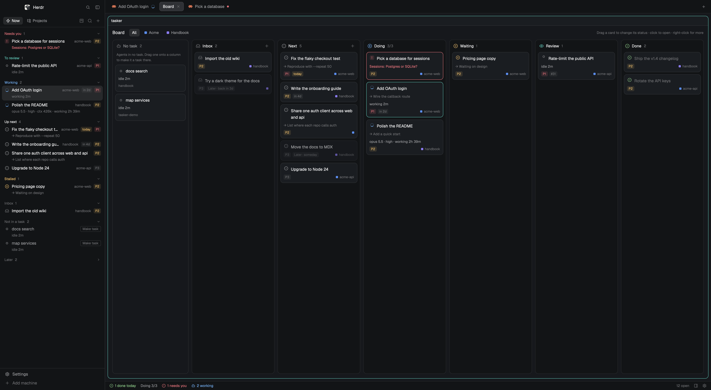
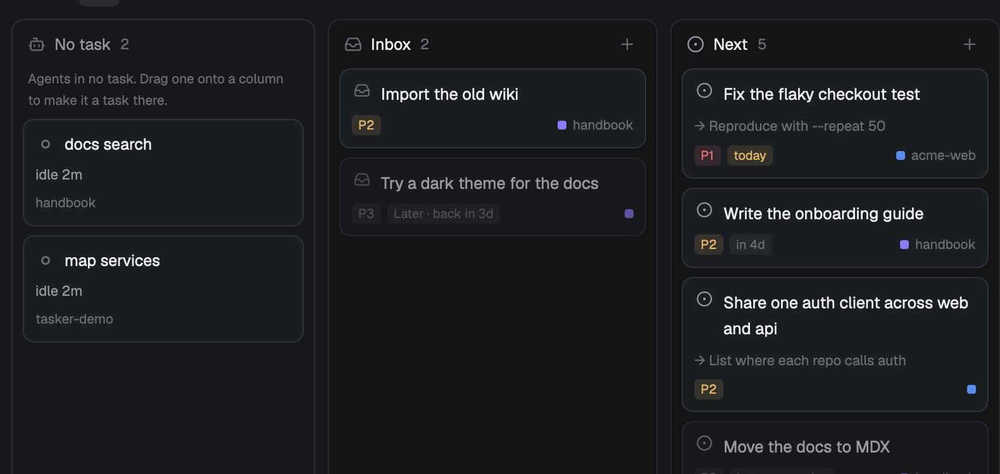
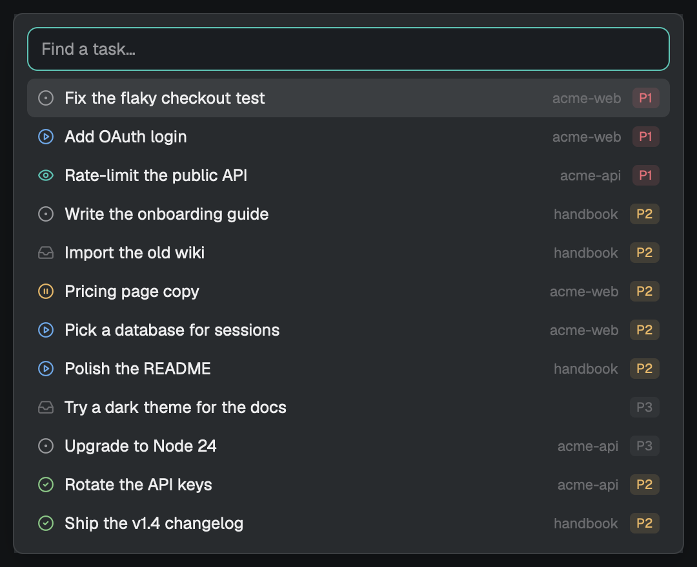
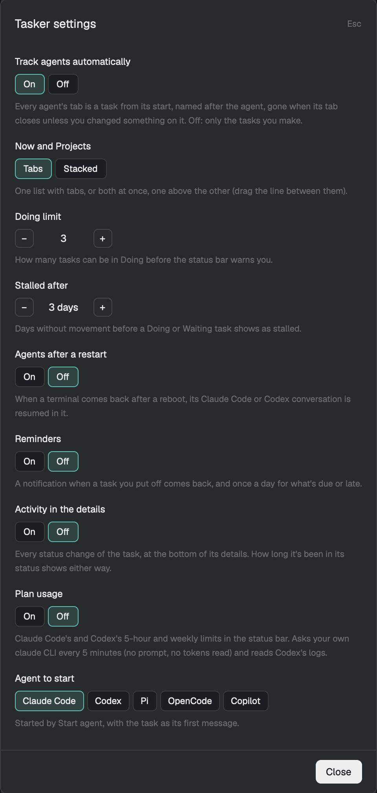

From install to a finished task
Ten short steps. You'll set up a project, start an agent on a task, answer its question, review what it did, mark it done, and pick work up again after a restart.
Install
You need the Herdr app 0.1.13 or later, and git. gh, GitHub's command line, is optional: it adds issues, pull requests and CI checks.
git clone https://github.com/alex-roc/herdr-tasker
cd herdr-tasker
./install.sh --keysThe script copies the layout, its theme and the mod into ~/.config/herdr-app, and --keys adds tasker's shortcuts without replacing any you already have. Run it again to update; ./install.sh --uninstall removes tasker and keeps your tasks.
Prefer to let an agent do it? In a Herdr terminal, ask your agent to "add the layout at github.com/alex-roc/herdr-tasker". Herdr's agents know how to install shared layouts.
Switch to tasker
Open Herdr's Settings → Look and pick tasker, or from any terminal:
herdr-app do layout.switch '{"name":"tasker"}'Your spaces, tabs and agents are the same; tasker only changes how they're shown. The left sidebar becomes the task list, a detail panel on the right shows the task you pick when you want more (open it with the panel button in the status bar or cmd i; it stays open or closed as you leave it), and the status bar counts what's done today, what's in progress and what needs you. Switch back to Herdr's own layout the same way.
Make a project

Press tab in the list (or click Projects) to see the outline. Every repository open in Herdr shows up, under No project at first.
Click the folder button in the header to make a project: give it a name and a color, and tick the repositories that belong to it. A repository that isn't open in Herdr comes in with Add folder…. A project's own ›_, + and ⋯ open a terminal, a task or an agent for the whole project: the agent starts in its first repository, gets the others too, and is told which they are. ⋯ → Close project closes every space of its repositories (a repository's menu closes just its own). You can also right-click a repository and pick a project.
Each repository row shows its branch, ↑2 for commits not pushed and •3 for uncommitted changes. Hover them for the words.
Add tasks
Press n, click + in the header, or + on a repository to start with that repository filled in.

Keep the title short. The next step is the one action to take now; what the work needs (context, details, how it should be done, links) goes in Notes. When you start an agent on the task, it gets the title, the next step and the notes as its first message.
Write the due date the way you'd say it:
today, tomorrow | as you'd expect |
fri, friday | the next Friday, never today |
+3d, 2w | three days, two weeks from today |
12-24 | this year's, or next year's if it passed |
2026-12-24 | exactly that day |
The date it understood appears beside the label as you type. Use Next step for the very next action: it's shown under the task in the list, and the agent gets it too.
Already have a backlog? Right-click the repository → Import GitHub issues or Import Linear issues, tick the ones you want, and they land in the Inbox with the issue attached. From Linear, the issues assigned to you come with their priority and due date.
Linear needs a personal API key (Linear → Settings → Security & access → Personal API keys). Export it as LINEAR_API_KEY in your shell profile, or save it alone in ~/.config/herdr-app/data/tasker/linear-key. tasker only reads from Linear.
Start an agent
Select a task and press l, hover it and click ▶, or click Start agent in the detail. tasker opens your agent in a new tab in the repository's space, with the task as its first message: the title, the next step, your notes and the issue if there is one.
The tab is tied to the task, and the task moves to Doing as soon as the agent starts working. Its row shows what the agent is running:
opus 5.5 · high · ctx 182k · working 14mThat's the model, the reasoning effort, how much context it holds, and how long it has been at it. tasker reads these from Claude Code's and Codex's own logs; other agents show their state and time.
In its own worktree
Press w (or Start in a worktree) to keep the work apart from your checkout: tasker creates the branch task/<name> in ~/.herdr/worktrees/<repo>/<name> first and starts the agent there. Herdr's own worktree tools see it too.
Started an agent before tasker knew about it? It shows up in the list (under Not in a task when it's idle) with a Make task button. Right-click it for Add to task… to tie it to a task you already have.
Answer when it asks

When an agent stops to ask something, its task jumps to Needs you at the top of Now, with the question in red right in the row. The status bar counts it too.
Select it to read the question and the last lines of the agent's screen in the detail. Then either:
- press enter (or Go to agent) to answer in its terminal, or
- type in Message the agent and press Send, without leaving the list.
Herdr itself plays a sound and posts a notification; tasker doesn't add another.
Review and finish

When the agent stops, the task moves to To review. Nothing is marked done by itself: that's your call.
Not now? Move it to Next (you'll do it), Waiting (it depends on someone) or Dropped (you won't), or put it off with Later (right-click or z): tomorrow, next week, a day you type, or someday. It waits in a folded Later section and comes back on its day with a notification.
In the detail, under Changes:
- Show changes opens Herdr's diff panel for the task's folder.
- With
gh, the pull request and its CI checks appear. Ask for a pull request sends the agent a request to commit, push and open one; Send failed checks sends it the names of the checks that failed.
Happy with it? Press space or Mark done. To put its tabs away too, right-click → Archive, which can also remove its worktree. A branch with unmerged commits is always kept.
Pick up after a restart

While a Claude Code or Codex agent works on a task, tasker remembers which conversation it's in. If the agent is gone (you restarted the machine, or closed its tab), the task's detail shows Resume agent first.
It runs claude --resume <id> or codex resume <id> in the folder the agent was in, and ties the new tab to the task. The agent keeps its whole conversation, so it doesn't need a first message. In the list, r does the same.
Plan on the board
Press cmd shift b or the board button to open the board as a tab.

- Drag a card to another column to change its status; click it to open its detail.
- Filter by project with the pills at the top.
- Doing shows how many tasks are in progress against your limit, and turns amber when you're over it.
- Agents in no task wait in the No task lane on the left: drag one onto a column to make it a task with that status.

Keys and settings
Clicking a task in the list shows it in the detail and brings its agent's tab (or its terminal) to the front.
With the keyboard in the list (cmd j):
| j k | move down and up |
| enter | go to the task's agent |
| space | mark done (again: back to Next) |
| 1 2 3 | priority high, normal, low |
| n e | new task, edit task |
| l w | start an agent, start it in a worktree |
| r | resume the task's last agent conversation |
| i | open the task's detail |
| z | later: put it off until a day, or someday |
| / | find a task |
| tab | switch between Now and Projects |
Anywhere in the layout: cmd k finds a task, cmd shift n makes one, cmd i shows or hides the detail.


The gear at the right of the status bar opens the settings:
- Now and Projects: one list with tabs, or stacked, both at once, one above the other (drag the line between them). Stacked, tab moves between them.
- Doing limit: how many tasks can be in progress before the status bar warns you.
- Reminders: a notification when a task you put off comes back, and once a day for what's due or late.
- Stalled after: days without movement before a task shows under Stalled.
- Agent to start: which of your installed agents Start agent runs.
- Plan usage: Claude Code's and Codex's limits in the status bar; off until you turn it on (it starts your
claudeCLI for a moment every few minutes).
That's the whole loop. Next, the examples show workflows built on it.